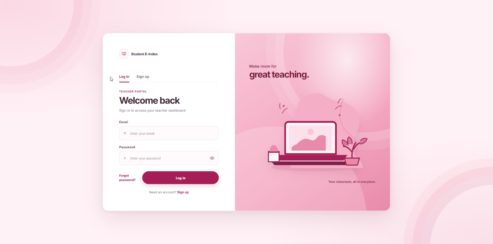

CASE STUDY / ACADEMIC PORTAL
E-Index System
Teacher and administration portals for class and student records, attendance with an RFID scan simulation, and academic reports.

Problem & Project Context
A written brief and original problem statement were not included with the supplied project materials. The provided screens show separate teacher and administration workspaces for attendance, class and student records, and academic administration.
Project Objectives & Target Users
Formal project objectives have not been documented. The visible scope includes teacher dashboards, attendance, class and section management, student records, reports, and administration tools for teacher accounts, approvals, and audit history. Teacher and administration portals are explicit in the supplied screens; students appear as managed records.
My Role
Your specific design, development, or collaboration responsibilities are not documented in the supplied project materials. This section is kept factual until those contributions are confirmed.
Design Process & Information Architecture
Wireframes and process notes were not supplied. In the provided interface, the Teacher Portal navigation groups Dashboard, Attendance & RFID, Students, Classes & Sections, Reports, and Settings. The Administration navigation groups Dashboard, Teachers, Students, Pending Approvals, Audit Log, and Settings.
Wireframes & Visible Interface Patterns
No wireframes were provided. The final screens show search and filter controls above student and teacher tables, summary cards on dashboards, and an RFID scan simulation beside attendance records. These are observations from the supplied UI, not claims about undocumented design rationale.
Final UI
The supplied screenshots show the Teacher Portal and Administration. Each screen is shown separately and can be opened at full size.
Teacher Portal
Administration
The Administration student-record screen identifies its rows as fictional preview data for layout testing.
Frontend Implementation
The framework, language, and database stack were not included in the supplied materials. The E-Index live demo is available to explore.
Challenges & Learnings
Personal implementation challenges and learning notes were not provided. Add confirmed examples here rather than presenting assumptions as project outcomes.